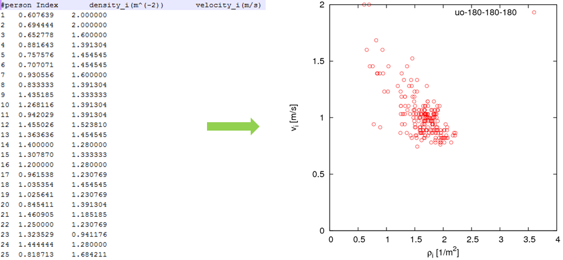
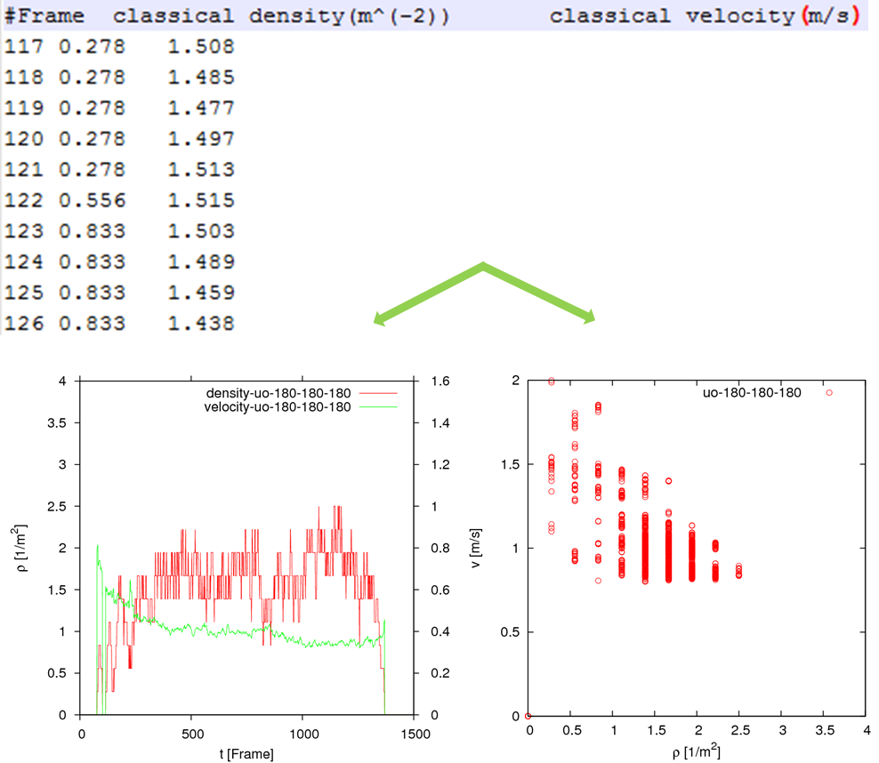
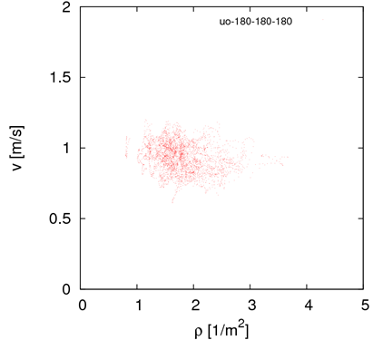
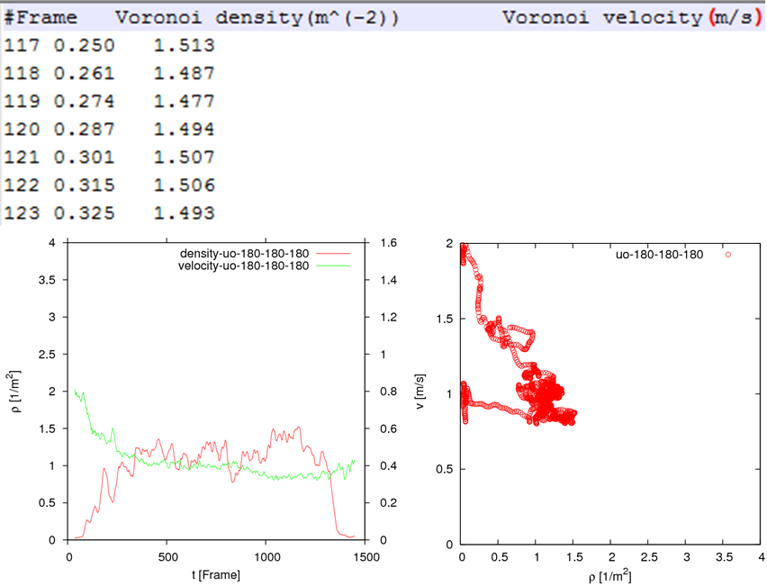
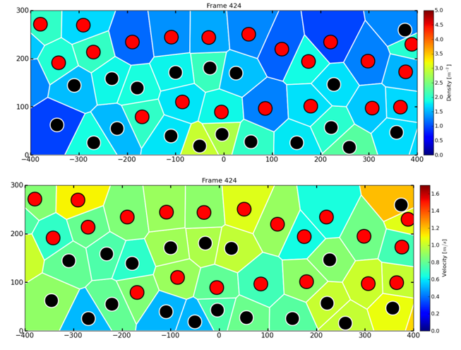
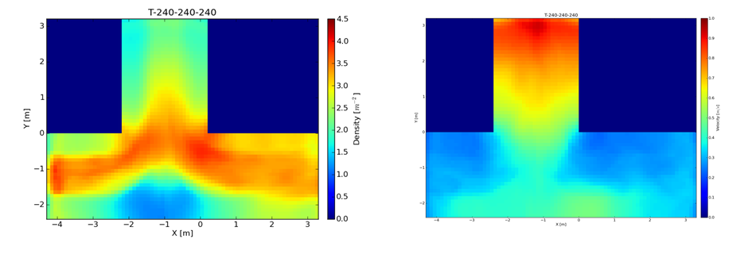

Configuration file
Users can find template file in the folder “demos/xx/” with name of “ini*” when you download JPSreport. To run JPSreport the only thing you need do is to copy a sample file and change the parameters in the file based your own situation.
In the configuration file, the following five parts are set:
-
Header is as below:
<?xml version="1.0" encoding="UTF-8" ?> <JPSreport project="JPS-Project" version="0.6" xmlns:xsi="http://www.w3.org/2001/XMLSchema-instance" xsi:noNamespaceSchemaLocation="http://xsd.jupedsim.org/0.6/jps_report.xsd"> -
geometry indicates the file name corresponding to the trajectory files you will analyze.
Note thatthe file should be in the same location with the configuration file.<geometry file = "geo_KO_240_050_240.xml" /> -
trajectories indicates the location and the name of the trajectory files will be analyzed. The format of trajectory should be
.txtor.xml. The supported unit of the trajectories now ism. Two other sub-optionsfileandpathcan be supplied. If onlypathis given, then all files with the corresponding format in the given folder will be regarded as the upcoming trajectories and JPSreport will try to load them one by one. If bothfileandpathare given, then only the given trajectories will be considered (severalfilecan be given at the same time). The location can be either absolute path or relative path to the location of the inifile. A path is considered absolute if it starts with ”/” (Linux system) or contains ”:” (Windows system).<trajectories format="txt" unit="m"> <file name="traj_KO_240_050_240.txt" /> <file name="traj_KO_240_060_240.txt" /> <path location="./" /> </trajectories> -
scripts gives relative path based on the location of inifile or the absolute path.
<scripts location="../../scripts/"/> -
measurement_areas indicates the types and location of the measurement areas you plan to use for analysis. Mainly Two kind of measurement areas can be exist here.
area_Bis 2D area and can be polygon (all the vertexes of the polygon should be given in clockwise), whilearea_Lis a reference line indicating with two points.area_Lis only used in ‘method_A’ andarea_Bare used for ‘method_B, method_C and method_D’. Several measurement areas can be given and distiguished with differentid. Note that the optionlength_in_movement_directionis only used in ‘method_B’ and the value will be ignored in other methods. The parameterzPosis used to indicate the position of measuement area in z axis.zPosis useful for geometry with several stories.<measurement_areas unit="m"> <area_B id="1" type="BoundingBox" zPos="None"> <vertex x="-2.40" y="1.00" /> <!-- Clockwise --> <vertex x="-2.40" y="3.00" /> <vertex x="0" y="3.00" /> <vertex x="0" y="1.00" /> <length_in_movement_direction distance="2.0" /> </area_B> <area_L id="2" type="Line" zPos="None"> <start x="-2.40" y="1.00" /> <end x="0" y="1.00" /> </area_L> <area_L id="3" type="Line" zPos="None"> <start x="-2.40" y="2.00" /> <end x="0" y="2.00" /> </area_L> </measurement_areas> -
velocity indicates the way for calculating instantaneous velocity v_i(t) of pedestrian i at time t from trajectories. In the tool, v_i(t) = (X(t+frame_step/2) - X(t-frame_step/2))/frame_step. X is location.
<use_x_component>and<use_x_component>indicates coordinates will be used in the calculation. When both<use_x_component>and<use_x_component>are set as “true”, x and y coordinates will be used. Otherwise, only coordinates in x or y direction will be used. Note that at least one of the above variables should be “true”.frame_stepgives the size of time interval for calculating the velocity.<velocity> <use_x_component>true</use_x_component> <use_y_component>true</use_y_component> <frame_step>10</frame_step> </velocity>-
methods indicates the parameters related to each measurement method. Four different meathods
method_Atomethod_Dare integrated in current version of JPSreport and can chosen in your analysis. Further information relating to each method can be found in Pedestrian fundamental diagrams: Comparative analysis of experiments in different geometries. The meaning of each parameters can be found Measurement methods. -
Method A
<method_A enabled="true"> <measurement_area id="2" frame_interval="100" plot_time_series="true"/> <measurement_area id="3" frame_interval="100" plot_time_series="true"/> </method_A>-
Parameters:
a)
idspecifies the location of the reference line. several measurement areas can be set in one inifile with different id.b)
frame_intervalspecifies the size of time interval (in frame) for calculating flow rate.c)
plot_time_seriesspecifies whether output the N-t Diagram. -
Output data (in the folder: ‘./Output/Fundamental_Diagram/FlowVelocity/’) See
Example-Method-A:File1: data for plotting N-t Diagram. (the accumlative nnumber of pedestrians passing the reference line and the corresponding time)
File2: The mean flow and velocity over the given time interval.
 Figure-Example-Method-A
Figure-Example-Method-A
-
-
Method B
<method_B enabled="false"> <measurement_area id="1" /> </method_B>Method B can only be used to analyse one directional (or part of one directional) pedestrian movement in corridor. The speed is definded by the length of the measurement area
length_in_movement_directionand the time a pedestrian stay in the area.-
Parameters:
a)
measurement_areagiven by id. Note that the measurement area for method_B should be rectangle based on the definition of the method. -
Output data:
mean density and velocity of each pedestrian ( and ).
 Figure-Example-Method-B
-
-
Method C–Classical method
<method_C enabled="true"> <measurement_area id="1" plot_time_series="false"/> </method_C>-
Parameters:
a)
idindicates the size and location of the measurement_area. Several measurement areas can be set in one inifile.b)
plot_time_seriesspecifies whether output the rho-t and v-t Diagram. -
Output data:
mean density and velocity of over time ( and ).
 Figure-Example-Method-C
-
-
Method D–Voronoi method
<method_D enabled="true"> <measurement_area id="1" start_frame="None", stop_frame="None" plot_time_series="false" get_individual_FD="false"/> <one_dimensional enabled="false"/> <cut_by_circle enabled="false" radius="1.0" edges="10"/> <output_voronoi_cells enabled="false" plot_graphs="false"/> <profiles enabled="false" grid_size_x="0.20" grid_size_y="0.20"/> </method_D>-
Parameters:
a) For each
measurement_area, its id should be given and several ids can be set in one inifile.start_frameandstop_framegive the starting and ending frame for data analysis.plot_time_seriesspecifies whether output the rho-t and v-t Diagram.get_individual_FDdetermines whether or not to output the data for individual fundamental diagram in the given measurement area, which is based on the Voronoi density and velocity of each pedestrian in a given measurement area but not mean value over space. If true, the related data will be written in the folder ./Output/Fundamental_Diagram/IndividualFD/
c)
one_dimensionalshould be used when pedestrians move on a line (for example, trajectories from single-file experiment)
d)
cut_by_circledetermines whether to cut each cell by circle or not. Two optionsradiusof the circle and the number ofedgeshave to be supplied for approximating the circle ifenabledis true.e)
output_voronoi_cellsspecifies whether or not to output data for visualizing the Voronoi diagram. Two optionsenabledandplot_graphshave to be set. If both of them are true, files including Voronoi cells, speed and the coordinates of pedestrian corresponding to each cell as well as the figures of Voronoi cells will be created in the folder ./Output/Fundamental_Diagram/Classical_Voronoi/VoronoiCell/. If the latter is false, only the datas will be created but the figures will not be plotted. Whenenableis false, nothing will be created.
f)
profilesindicates whether to calculate the profiles over time and space. Ifenabledis true, the resolution which is decided by the parametersgrid_size_xandgrid_size_xshould be set. The data will be in the folder +./Output/Fundamental_ Diagram/Classical_Voronoi/field/.
-
Output data:
Mean density and velocity over time (rho(t) and v(t)).
Sample data for plotting the Voronoi cells.
Data for plotting profiles.
Data of individual Fundamental diagram.
-
-